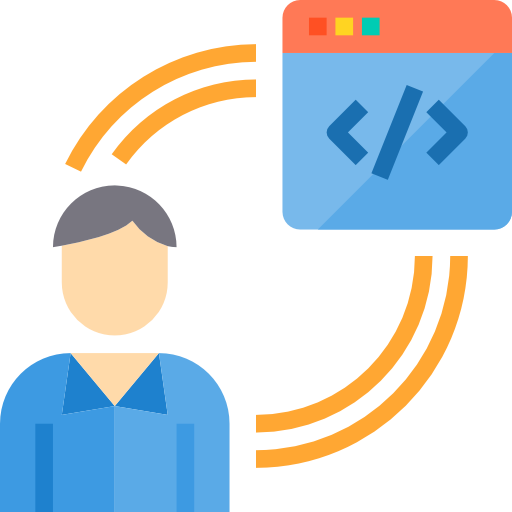

<html>
    <head>
        <meta charset="UTF-8">
        <meta name="viewport" content="width=device-width, initial-scale=1.0">
        <title>Tercero</title>
        <link rel="icon" href="programador.png" type="image/X-icon">
        <link href="https://cdn.jsdelivr.net/npm/bootstrap@5.3.3/dist/css/bootstrap.min.css"
        rel="stylesheet" integrity="sha384-QWTKZyjpPEjISv5WaRU9OFeRpok6YctnYmDr5pNlyT2bRjXh0JMhjY6hW+ALEwIH" crossorigin="anonymous">
        <script src="https://cdn.jsdelivr.net/npm/bootstrap@5.3.3/dist/js/bootstrap.bundle.min.js" integrity="sha384-YvpcrYf0tY3lHB60NNkmXc5s9fDVZLESaAA55NDzOxhy9GkcIdslK1eN7N6jIeHz" 
        crossorigin="anonymous"></script>
        <style>
            body{
                background-color: rgb(212, 181, 240);
                p{
                    color: rgb(0, 0, 0);
                    font-size:10px;
                    font-family: Verdana, Geneva, Tahoma, sans-serif;
                    text-align: justify;
                }
                .título{
                    text-align: center;
                    color: rgb(15, 171, 233);
                    font-family: Comic Sans MS;
                    padding: 1px;
                    margin 5px auto;
                    border: 2px blue;
                    background-color: aliceblue;
                }
                #pie{
                font-family: Comic Sans MS;
                font-size: small;
                color: rgb(26, 89, 160);
                text-align: center;
            
            }
            }
        </style>
    </head>
</html>
<body>
    <header>
        <div class="título"><h1 title= "IES Francisco Giner de los Ríos">Programación</h1>
        
        <br>
        <br>
    </div>
    </header>
    <div class="accordion" id="accordionExample">
        <div class="accordion-item">
          <h2 class="accordion-header">
            <button class="accordion-button" type="button" data-bs-toggle="collapse" data-bs-target="#collapseOne" aria-expanded="true" aria-controls="collapseOne">
             App Inventor
            </button>
          </h2>
          <div id="collapseOne" class="accordion-collapse collapse show" data-bs-parent="#accordionExample">
            <div class="accordion-body">
             <strong>App Inventor</strong>  es una plataforma de desarrollo de aplicaciones móviles creada originalmente por Google y ahora gestionada 
             por MIT (Massachusetts Institute of Technology). Está diseñada para facilitar la creación de aplicaciones móviles para Android de forma visual e intuitiva, 
             sin necesidad de tener experiencia previa en programación. Utiliza un enfoque basado en bloques (similar a lenguajes como Scratch),
              lo que permite a los usuarios crear aplicaciones de manera sencilla mediante la combinación de bloques de código que representan diversas funciones.
            </div>
          </div>
        </div> 
        <br>
        <hr>
    
    <a href="https://appinventor.mit.edu/"><h5>App inventor</h5></a> 
    <P> Accesibilidad y uso gratuito:</P>
    <br>
    <ul>
        <li><p>Plataforma gratuita: App Inventor es completamente gratuito y de código abierto.
             No requiere ningún tipo de suscripción, lo que lo hace accesible a una amplia variedad de usuarios, especialmente en el ámbito educativo.</p></li>
         <li><p>Acceso en la web: No es necesario instalar ningún software adicional, ya que el entorno de desarrollo de App Inventor funciona completamente en el navegador,
             lo que lo hace accesible desde cualquier dispositivo con conexión a Internet.</p></li>  
              
    </ul>
    <div class="accordion" id="accordionExample">
        <div class="accordion-item">
          <h2 class="accordion-header">
            <button class="accordion-button" type="button" data-bs-toggle="collapse" data-bs-target="#collapseOne" aria-expanded="true" aria-controls="collapseOne">
             Scratch
            </button>
          </h2>
          <div id="collapseOne" class="accordion-collapse collapse show" data-bs-parent="#accordionExample">
            <div class="accordion-body">
             <strong>Scratch</strong> es un lenguaje de programación visual diseñado para enseñar a los más jóvenes los fundamentos de la programación y la lógica computacional 
             de manera divertida e interactiva. Creado por el MIT Media Lab, Scratch permite a los usuarios, especialmente niños y principiantes,
              crear animaciones, juegos, historias interactivas y otros proyectos multimedia, sin necesidad de escribir código complicado.
            </div>
          </div>
        </div> 
        <br>
        <hr>
    
    <a href="https://scratch.mit.edu/"><h5>Scratch</h5></a> 
    <p>Ejemplos de proyectos que se pueden crear con Scratch:</p>
    <ol>
        <li><p>Juegos: Creación de juegos de plataformas, rompecabezas, juegos de matemáticas, de laberintos, de aventura, etc.</p></li>
         <li><p>Animaciones: Animaciones de personajes que interactúan, cambios de escena, movimientos y efectos visuales.</p></li>  
         <li><p>Simulaciones interactivas: Proyectos que simulan fenómenos físicos, matemáticos o científicos, como el movimiento de los planetas, 
            el ciclo del agua o procesos químicos.</p></li>
            <li><p>Aplicaciones educativas: Juegos de preguntas, quizzes interactivos, herramientas de aprendizaje de idiomas, matemáticas, historia, etc.</p></li>
            <li><p>Arte digital y música: Proyectos de arte interactivo, creación de sonidos y música mediante programación.</p></li>
              
    </ol>
    <br>
    <hr>
    <div id="pie">
    <a href="index.html">
    <button type="button" class="btn btn-outline-primary" disabled > Volver a la página principal</button></a>
    <br>
    <br>
    <br>
    
         &copy; Ana Belén Martín Sánchez </div>
</body>